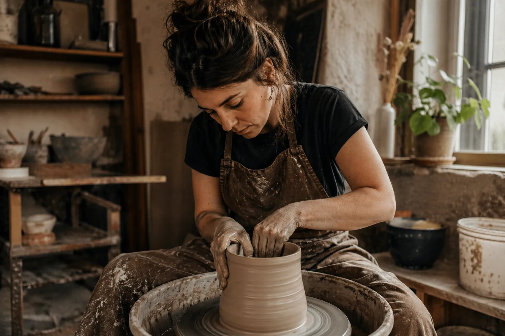
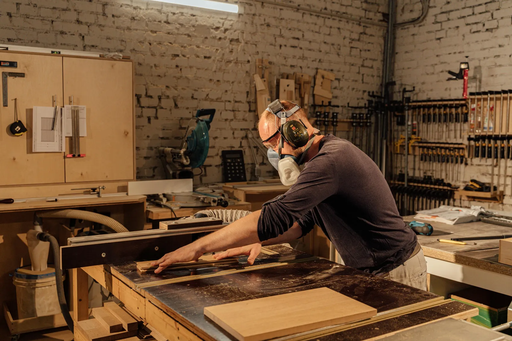
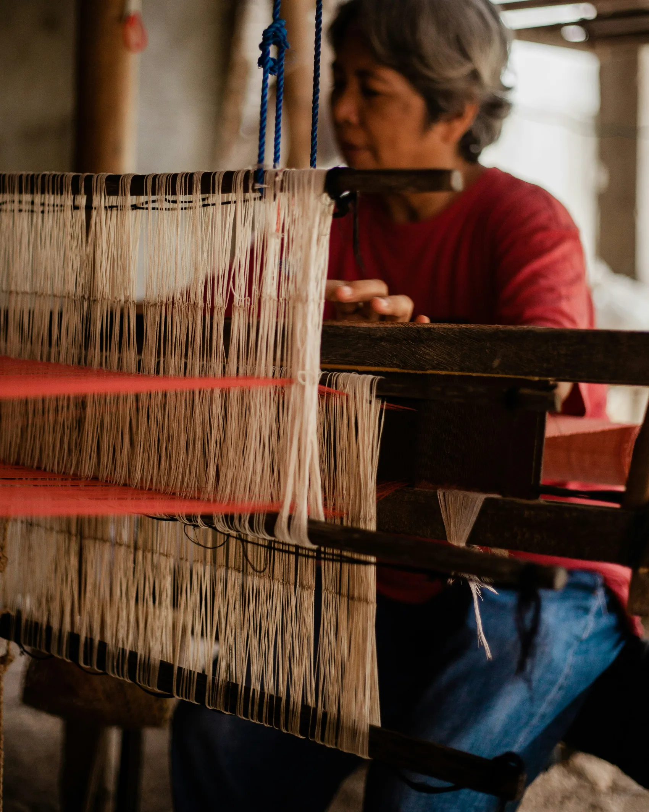
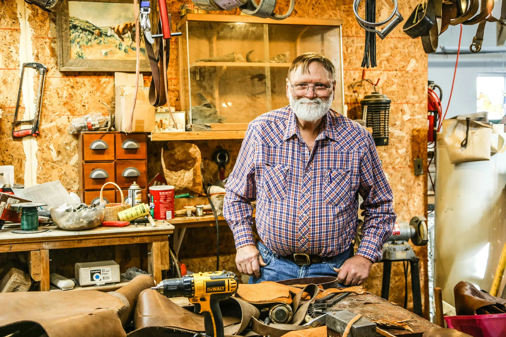
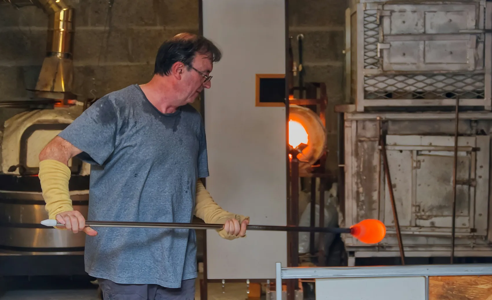
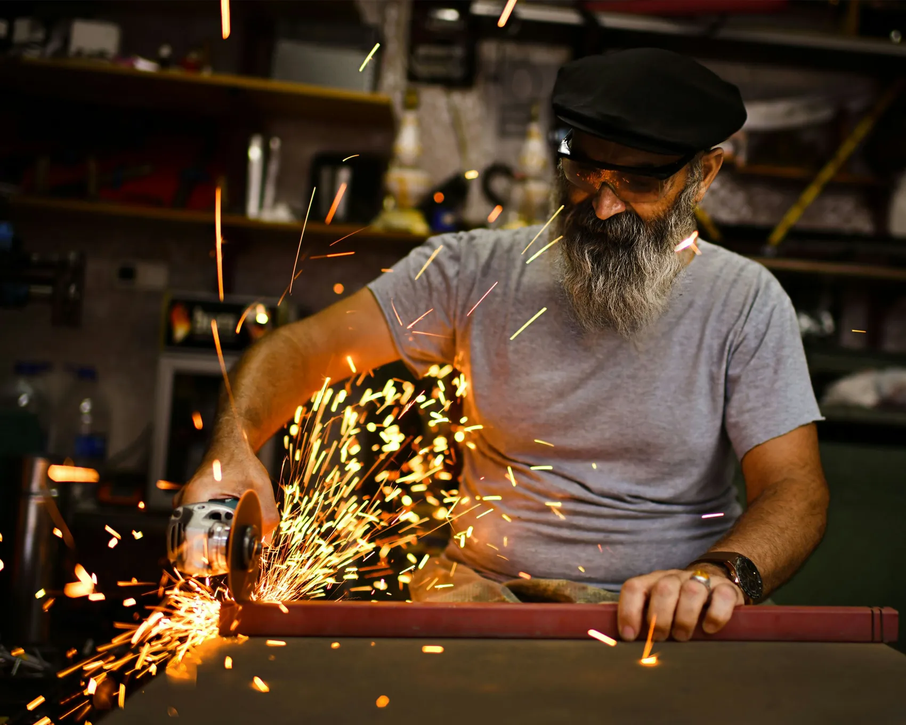

Cerámica
Marta Soler
Especialista en cerámica tradicional y creación de piezas hechas a mano.
Profesionales de distintos oficios artesanales compartirán su experiencia, sus procesos de trabajo y su visión sobre la artesanía contemporánea.

Cerámica
Especialista en cerámica tradicional y creación de piezas hechas a mano.

Madera
Carpintera especializada en mobiliario artesanal y materiales de proximidad.

Textil
Creadora textil centrada en fibras naturales, tintes vegetales y tejido manual.

Cuero
Artesano especializado en marroquinería y técnicas tradicionales del cuero.

Vidrio
Soplador de vidrio especializado en piezas decorativas y formas orgánicas.

Forja
Maestro en forja artesanal y creación de piezas metálicas tradicionales.
Más de 12 talleres y charlas artesanales
Un espacio para compartir creatividad y tradición.